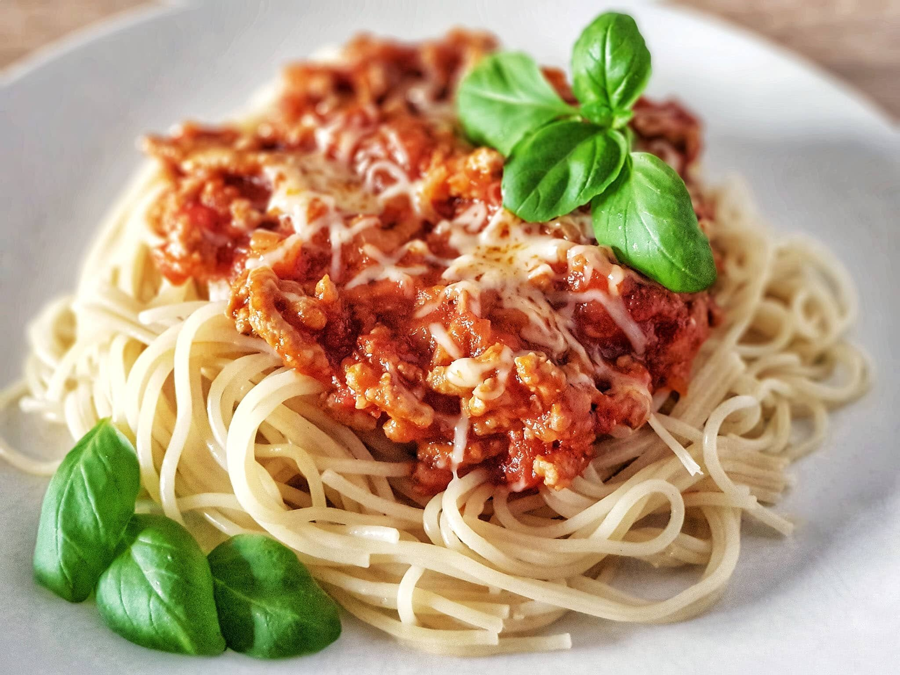

Spaghetti
Ingredients
- 1 pound ground beef
- 1 medium onion, chopped
- 4 cloves garlic, minced
- 1 small green bell pepper, diced
- 1 (28 ounce) can diced tomatoes
- 1 (16 ounce) can tomato sauce
- 1 (6 ounce) can tomato paste
- 2 teaspoons dried oregano
- 2 teaspoons dried basil
- 1 teaspoon salt
- ½ teaspoon ground black pepper
Directions
-
Step 1
-
Step 2
-
Step 3
-
Step 4
Gather all ingredients.
Combine ground beef, onion, garlic, and green pepper in a large saucepan
over medium-high heat.
Cook and stir until meat is browned and crumbly and vegetables are tender,
5 to 7 minutes. Drain grease.


Stir diced tomatoes, tomato sauce, and tomato paste into the pan. Season
with oregano, basil, salt, and pepper.
Simmer spaghetti sauce for 1 hour, stirring occasionally.
Serve hot and enjoy!